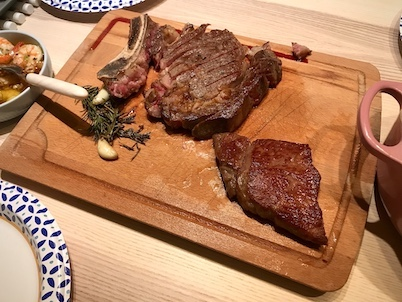
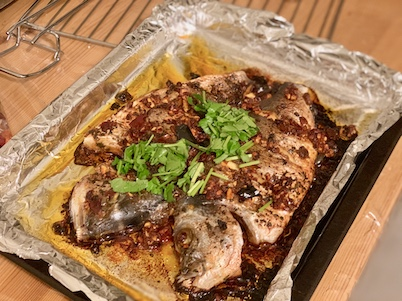
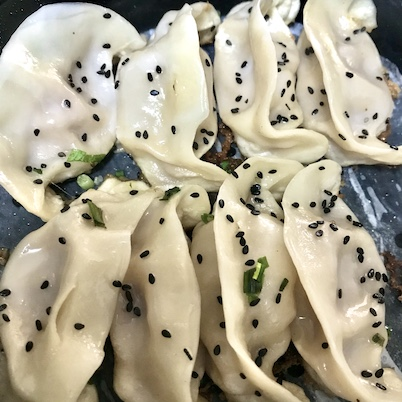

COOKING LESSONS
by FEI XU
- How To Cook Perfect Steak

- Lay your steaks out on a board and blot them dry with a paper towel.
- Pre-heat oven to 160 degrees C. Rub the steak fillet with melted beef fat or beef dripping, and season heavily with fine Cornish sea salt.
- Place in a very hot dry cast iron pan for 3-4min on each side so you get a deep crust, ensuring you're constantly moving the steak around the pan until it's beautiful brown.
- Remove the steak and put on a rack or dish with crushed garlic, herbs and bay leaves. After a few minutes, place the steak in the oven and bring the core temperature up gently. Turn every few minutes until core temperature around 43-44 degrees C.
- For a special finish you can lather the steak in aged beef fat and marmite butter for a great umami kick and then let rest for 10-15min in a warm place.
- Season with coarse Cornish sea salt and black pepper, then slice to serve.

Ingredients
- 2 whole sea bass 400grams
For grilling the fish
- olive oil to coat the fish
- 1 teaspoon chili pepper flakes; 1 teaspoon cumin powder; 1 thumb ginger, half sliced, half miced; 1 medium size onion, sliced; 1 teaspoon salt
For the sauce
- 2 tablespoons spicy fermented bean paste dou ban jiang
- 1 tablespoon fermented black bean sauce dou chi jiang
- Sichuan pickled pepper (pao jiao) (or Cajun pickled pepper) (Optional)
For the stir-fry
- 2 tablespoons peanut oil (or vegetable oil); 2 teaspoons Sichuan peppercorn; 5 cloves garlic , halved;10 - 20 chili pepper , dried;1 cup lotus root , sliced; 1 cup bamboo shoot , sliced; 2 cups shiitake mushroom , sliced; 10 - 20 chili pepper , dried; 4 tablespoons chicken broth (or water); 1 teaspoon sugar;cilantro for garnish (Optional)
Instructions
- Wash all the vegetables and chop the onion and ginger.
- Preheat oven to 220 degrees C (430 F). Line a baking tray with a sheet of parchment and spray a thin layer of olive oil on top.
- Mix chili pepper flakes and cumin powder in a small bowl.
- Spread half of the onion slices on the baking tray.
- Dry the fish thoroughly with a paper towel. Place the fish on top of the onion. Grind salt and sprinkle half the chili and cumin mixture evenly over the fish. Spray a thin layer of oil on top. Flip the fish and season the other side in the same manner, spray with oil. Stuff ginger slices and a few slices of onion in the cavity of the fish.
- Bake on the middle rack until fish is cooked through, about 20 minutes (or longer time if you use a larger fish). You should be able to easily separate the flesh from the bone with a fork, and the internal temperature of the fish should be 62 degrees C (145 F).
- While the fish is baking, chop the rest of the vegetables. Place lotus root, bamboo shoots, and mushrooms on a plate. Mix chili bean paste, black chili paste and Sichuan pickled peppers in a small bowl. Add dried chili pepper and chicken broth separately in two small bowls. Place the veggies, mixed sauce, peppercorns, dried chili pepper, chicken broth, salt and sugar on the kitchen counter, near the wok.
- Heat the wok over medium high heat and add oil. When the oil is warm, add peppercorns. Stir until fragrant and the peppercorns turn dark brown, 30 seconds to 1 minute. Turn to lowest heat. Use a ladle to scoop out the peppercorns and discard them.
- Turn to medium high heat. Add the remainder of the minced ginger and garlic and stir a few times until fragrant. Add the rest of the onion. Stir until the onion turns translucent, about 1 minute.
- Add the mixed sauce and stir immediately to coat onion with sauce evenly, 30 seconds.
- Add chili pepper, stir a few times to mix.
- Add lotus root, bamboo shoots, and mushrooms. Stir continuously for 1 to 2 minutes. Add chicken broth and sugar. Continue to stir until the seasonings are mixed evenly and the veggies are cooked through. Turn to lowest heat and taste the veggies. Add more salt to adjust seasoning if necessary.
- Transfer the baked fish to a big plate. Pour the veggies and sauce over top of the fish. Garnish with cilantro.
- Serve immediately with steamed rice.
- 3 Different Ways to Cook Chinese Dumplings

- Pan-Fried. Pan-fried dumplings are cooked by a combination of frying and steaming, yielding a mix of tender and crispy textures. They're the easiest method for beginners because they can be made with store-bought dumpling wrappers, and there's no danger of poorly shaped dumplings falling apart in boiling water. To make pan-fried dumplings, nestle dumplings in a well oiled skillet, add a generous splash of water, and cover to steam. When the water has evaporated and the dumplings are fully cooked, leave them in the pan to brown.
- Boiled. Boiling is the most common technique for cooking dumplings in China, but boiled dumplings requires skilled crimping, so that the filling won't fall out when they're dropped in a large pot of boiling salted water. The method yields soft, moist dumplings that are usually small and crescent shaped.
- Steamed. A third technique for cooking dumplings is steaming, which involves a steamer basket set above a wok or pot of boiling water. Steamed dumplings can be bigger than boiled dumplings, and the shaping rules are more flexible. (Open-top dumplings, anyone?) To keep steamed dumplings tender, the dough is usually made from very hot water.